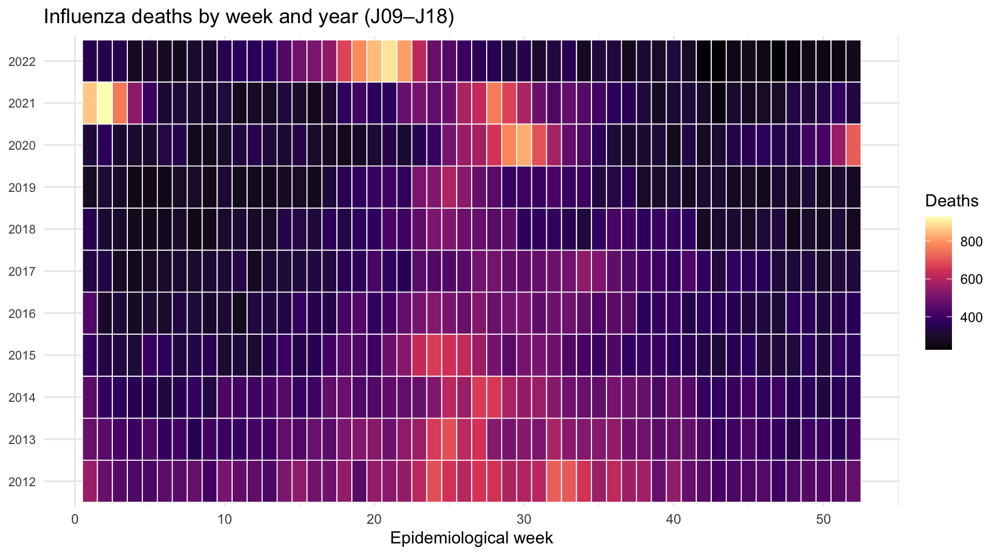
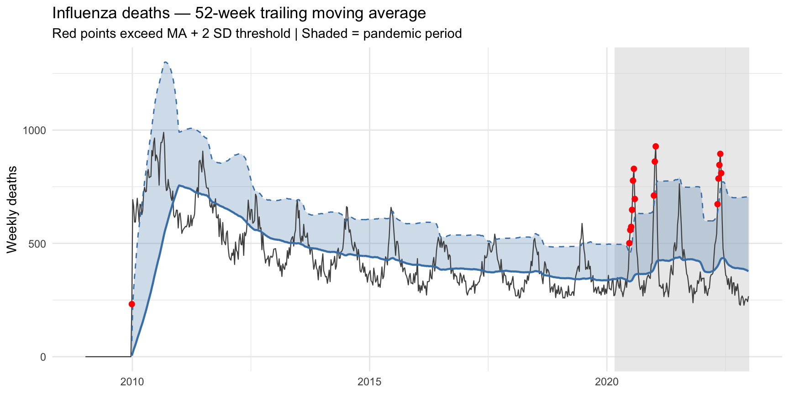
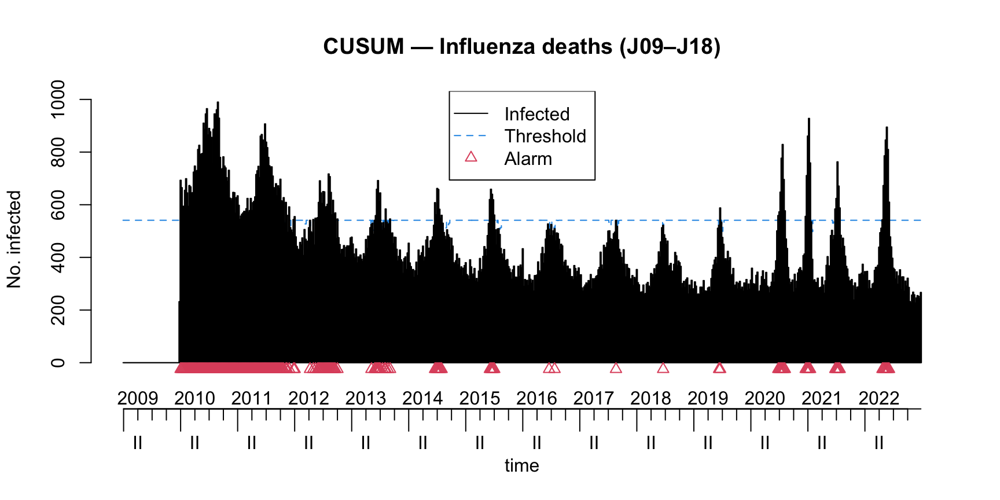
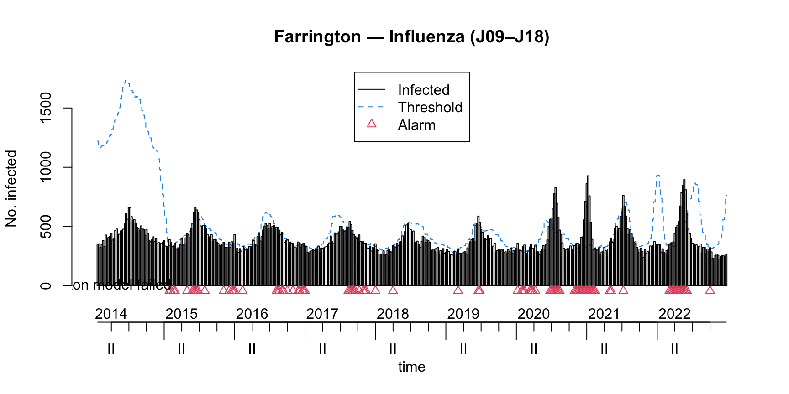
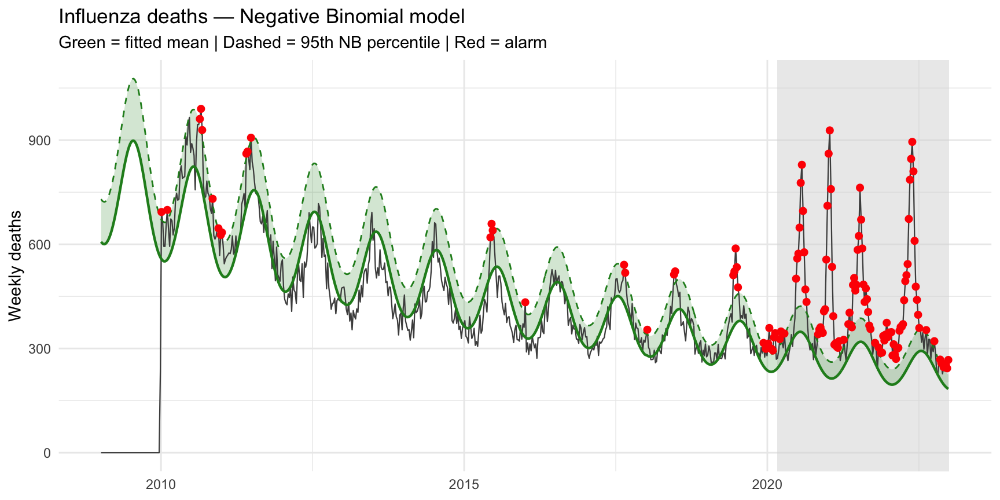
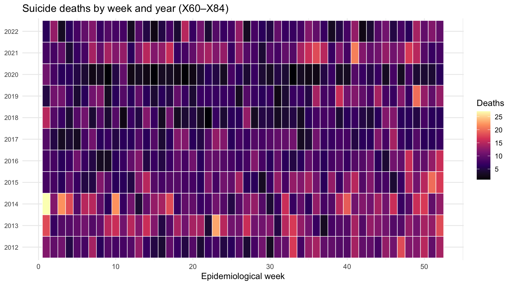
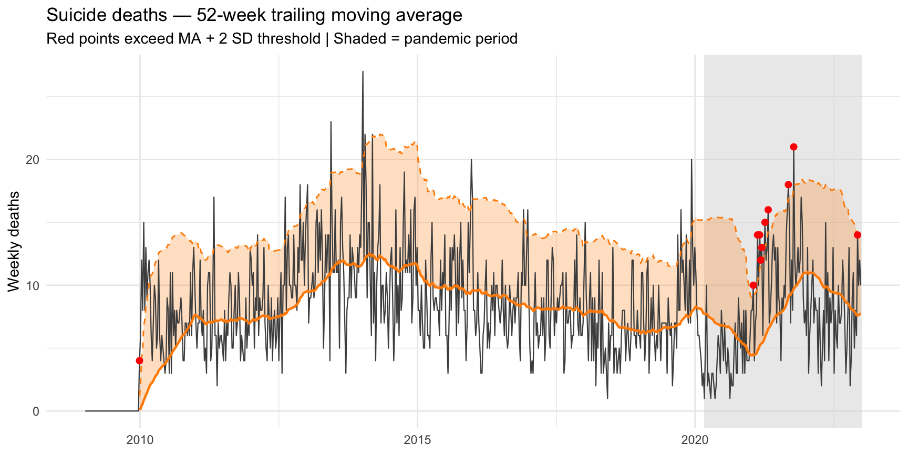
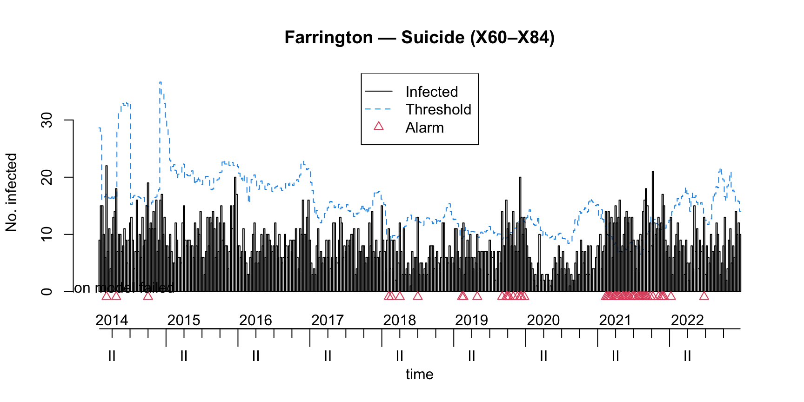
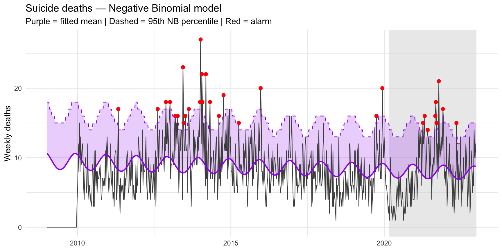
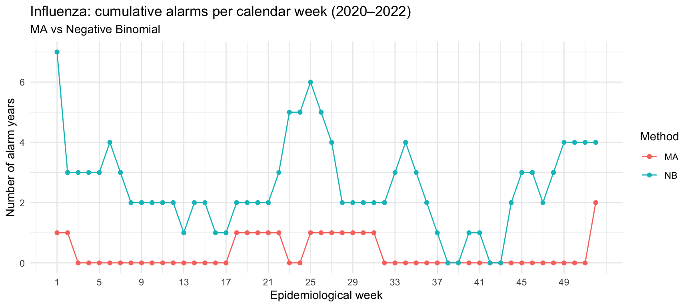

Comparative analysis of methods for detecting mortality anomalies — Influenza and Suicide
signal-detection
surveillance
epidemiology
suicide
influenza
Moving Averages, CUSUM, Farrington, and Negative Binomial models applied to South African vital registration data to detect influenza seasons and suicide trends.
Published
March 9, 2026
1 Introduction
This project evaluates four statistical methods for signal detection in routine Vital Registration (VR) data. VR data are the basis for national cause-of-death statistics but are rarely used in real-time surveillance; this analysis explores whether standard epidemiological surveillance algorithms can extract meaningful signals from death certificate counts alone.
We focus on two causes of death with different signal characteristics:
Influenza (J09–J18): Strongly seasonal (Southern Hemisphere winter, May–August), with a sharp annual peak. Ideal for testing seasonal detection.
The four methods are compared on their ability to detect known seasonal patterns in the baseline period, and their alarm behaviour during COVID-19 (2020–2022), when influenza virtually disappeared due to NPIs.
2 Methods Overview
Method
Approach
Best suited for
Moving Average (MA)
Trailing 52-week mean ± 2 SD
Visual exploration; simple baseline deviation
CUSUM
Cumulative sum of deviations vs in-control mean
Sustained upward shifts; trend detection
Farrington
Quasi-Poisson on same-week prior years
Seasonal outbreaks; standard public health surveillance
Negative Binomial (NB)
GLM with harmonic seasonality terms
Overdispersed counts; direct probabilistic threshold
Baseline period: 2010–2019. Surveillance period (out-of-sample): 2020–2022.
3 Data
Weekly counts from the South African vital registration file (1997–2022, MRC-processed). Only epidemiological weeks 1–52 are retained for consistent sts object construction.
Table 1: Weekly death count summary by cause group, South Africa 2010–2022
Cause group
ICD-10 codes
Total deaths (2010–2022)
Median weekly deaths
Max weekly deaths
Influenza & pneumonia (J09–J18)
J09, J10, J11, J12–J18
305,530
391
990
Intentional self-harm (X60–X84)
X60–X84
5,752
8
27
4 Case Study 1: Influenza (J09–J18)
We use codes J09–J18, which cover influenza-specific deaths (J09–J11) and pneumonia deaths (J12–J18). Restricting to J09–J11 only would yield very low counts in VR data, where many influenza deaths are coded to a pneumonia code. A sensitivity analysis restricted to J09–J11 is noted in the limitations.
4.1 Seasonal pattern
Figure 1 shows week-by-year death counts. A clear winter peak (weeks 20–35) should be visible in most baseline years.
Show code
if (exists("fig_flu_heatmap")) fig_flu_heatmap elsemessage("Run signal_detection_wrangling.R first.")

Figure 1: Fig. 1. Influenza and pneumonia deaths (J09–J18) by epidemiological week and year, 2012–2022. Winter peak (weeks 20–35, May–August) expected in all pre-pandemic years; signal should diminish in 2020–2021 owing to NPI-driven influenza suppression.
4.2 1. Moving Average
The threshold is the trailing 52-week rolling mean plus two rolling standard deviations. Both statistics are computed over the same backward-looking window to avoid inflating the threshold with outbreak-period variance.
Show code
if (exists("fig_flu_ma")) fig_flu_ma elsemessage("Run signal_detection_wrangling.R first.")

Figure 2: Fig. 2. Influenza deaths with 52-week trailing moving average and 2-SD threshold. Red points exceed the threshold. Shaded area = pandemic period (2020–2022).
4.3 2. CUSUM
CUSUM accumulates deviations from the in-control mean (\(\mu_0\) estimated from 2010–2019 baseline). Parameters: \(k = 1.04\) (reference value; detects ~doubling of baseline rate), \(h = 2.26\) (decision boundary). CUSUM is designed for sustained increases and will typically lag a sharp seasonal peak by several weeks.
Show code
if (exists("flu_cusum") &&!is.null(flu_cusum$sts)) {plot(flu_cusum$sts, main ="CUSUM — Influenza deaths (J09–J18)")} else {message("CUSUM result not available — run signal_detection_wrangling.R first.")}

Figure 3: Fig. 3. CUSUM statistic for influenza deaths (J09–J18). CUSUM resets to zero after each alarm.
4.4 3. Farrington Algorithm
Fits a quasi-Poisson model to counts from the same calendar weeks in the five prior years (±3 week window per year), with linear trend adjustment and downweighting of past outbreak weeks. The 95% upper prediction bound triggers an alarm.
Show code
if (exists("fig_flu_farr_fn")) {fig_flu_farr_fn()} else {message("Run signal_detection_wrangling.R first.")}

Figure 4: Fig. 4. Farrington flexible algorithm for influenza deaths (J09–J18). Blue = observed; red = upper 95% bound. Triangles = alarm weeks.
4.5 4. Negative Binomial Model
The model is fitted on baseline years (2010–2019) only, then projected forward. The alarm threshold is the 95th percentile of the negative binomial predictive distribution (qnbinom(0.95, mu, theta)), not a normal approximation, which is inappropriate for discrete overdispersed counts.
if (exists("fig_flu_nb")) fig_flu_nb elsemessage("Run signal_detection_wrangling.R first.")

Figure 5: Fig. 5. Negative Binomial model predictions for influenza deaths. Green line = fitted expected mean (baseline model projected forward). Dashed green = 95th NB percentile. Red points = alarms.
5 Case Study 2: Suicide / Intentional Self-harm (X60–X84)
The regex filter ^X[67][0-9]|^X8[0-4] is used rather than lexicographic string comparison, which is unreliable for four-character ICD-10 codes in R.
5.1 Seasonal pattern
Show code
if (exists("fig_sui_heatmap")) fig_sui_heatmap elsemessage("Run signal_detection_wrangling.R first.")

Figure 6: Fig. 6. Intentional self-harm deaths (X60–X84) by epidemiological week and year, 2012–2022. Any seasonality is modest compared with influenza.
5.2 Moving Average
Show code
if (exists("fig_sui_ma")) fig_sui_ma elsemessage("Run signal_detection_wrangling.R first.")

Figure 7: Fig. 7. Suicide deaths with 52-week trailing moving average and 2-SD threshold.
5.3 Farrington Algorithm
A wider window (w = 4 weeks) is used for suicide to compensate for lower weekly counts and reduce quasi-Poisson instability near zero counts.
Show code
if (exists("fig_sui_farr_fn")) {fig_sui_farr_fn()} else {message("Run signal_detection_wrangling.R first.")}

Figure 8: Fig. 8. Farrington flexible algorithm for suicide deaths (X60–X84) with w = 4.
5.4 Negative Binomial Model
Show code
if (exists("fig_sui_nb")) fig_sui_nb elsemessage("Run signal_detection_wrangling.R first.")

Figure 9: Fig. 9. Negative Binomial model predictions for suicide deaths.
Table 2: Table 2. Number of weekly alarm flags raised during 2020–2022 by method and cause of death
Method
Influenza alarms (2020-2022)
Suicide alarms (2020-2022)
Moving Average (MA)
15
10
CUSUM
24
4
Farrington
0
0
Negative Binomial (NB)
105
9
Show code
if (exists("fig_alarm_compare")) fig_alarm_compare elsemessage("Run signal_detection_wrangling.R first.")

Figure 10: Fig. 10. Influenza alarms by calendar week: Moving Average vs Negative Binomial. Winter weeks (20–35) should dominate in baseline years.
7 Discussion
7.1 Can VR data detect an influenza season?
All four methods should confirm a consistent winter peak in J09–J18 deaths during 2010–2019. Farrington and the NB model — which both explicitly model same-week prior-year patterns — are expected to be most sensitive for the sharp 12–16 week influenza peak. CUSUM, while powerful for sustained trends, will typically lag peak onset by several weeks.
The COVID-19 period (2020–2022) provides a built-in validation: if influenza was truly suppressed by NPIs, alarm rates should fall during winter 2020–2021 despite the continuation of the winter window. Any winter alarms in those years are more plausibly attributable to COVID-19 deaths misclassified under respiratory codes — consistent with the J-Code Modelling analysis in this project, which estimated 30 181 excess COVID-19 deaths recorded under J-codes.
7.2 Can VR data detect a suicide trend?
Weekly suicide counts are substantially lower than respiratory deaths, creating a higher noise-to-signal ratio. The NB model’s harmonic terms will indicate whether any systematic seasonality exists. CUSUM is the most appropriate method for detecting a sustained upward trend rather than a spike. VR-based suicide surveillance is most plausible for annual or multi-month trend monitoring rather than week-to-week alarms.
7.3 Limitations
Registration delay: deaths may be registered weeks to months after occurrence, attenuating real-time detection value.
ICD-10 coding variability: influenza-specific codes (J09–J11) are often underused; including J12–J18 improves sensitivity but reduces specificity.
No population offset: absolute counts are analysed for simplicity; a population offset should be included in a full analysis, particularly over a 12-year period with demographic change.
Week 53: excluded; years with 53 epidemiological weeks contribute one fewer observation.